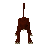

Taverly (underground)
Underground area at 2900, 9858 · Kingdom of Asgarnia, Underground
Open on the world map → Open in knowledge graph → Surface: Taverly
NPCs
| NPC | Level | Spawns | Notable drops |
|---|---|---|---|
 Hellhound | 122 | 2 | |
| 111 | 3 | Coins, Herb drop table, Water rune, Nature rune | |
| 82 | 3 | Coins, Fire rune, Chaos rune, Gem drop table | |
| 64 | 1 | ||
| Baby blue dragon | 48 | 4 | |
| 33 | 2 | Coins, Steel bar, Iron sword, Mithril arrow | |
| 27 | 9 | ||
| 25 | 6 | Herb drop table, Coins, Bronze arrow, Iron dagger | |
| 22 | 1 | Coins, Herb drop table, Iron med helm, Bronze bar | |
| 20 | 2 | Coins, Bronze pickaxe, Hammer, Bolt | |
| 19 | 11 | ||
| 1 | 3 | ||
| 1 |